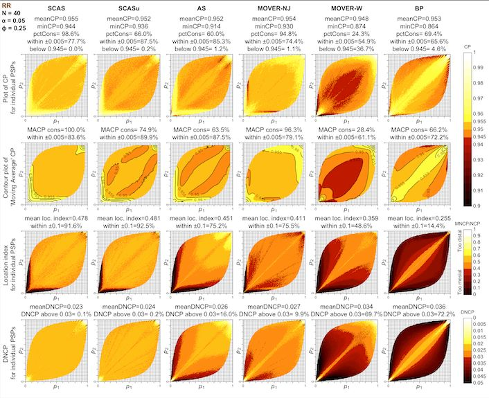

Confidence intervals and tests for paired comparisons of binomial proportions
The input data for paired proportions takes a different structure, compared with the data for independent proportions:
| Event B | ||||
| Success | Failure | Total | ||
| Event A | Success | |||
| Failure | ||||
| Total |
SCAS and other asymptotic score methods for RD and RR
To calculate a confidence interval (CI) for a paired risk difference (, where , ), or relative risk (), the skewness-corrected asymptotic score (SCAS) method is recommended, as one that succeeds, on average, at containing the true parameter with the appropriate nominal probability (e.g. 95%), and has evenly distributed tail probabilities (Laud 2025, under review). It is a modified version of the asymptotic score methods by (Tango 1998) for RD, and (Nam and Blackwelder 2002) and (Tang, Tang, and Chan 2003) for RR, incorporating both a skewness correction and a correction in the variance estimate.
The plots below illustrate the one-sided and two-sided interval coverage probabilities achieved by SCAS compared to some other popular methods1, when and the correlation coefficient is 0.25. A selection of coverage probability plots for other sample sizes and correlations can be found in the “plots” folder of the cpplot GitHub repository.

pairbinci() takes input in the form of a vector of
length 4, comprising the four values c(a, b, c, d) from the
above table, which are the number of paired observations having each of
the four possible pairs of outcomes.
For example, using the dataset from a study of airway reactivity in children before and after stem cell transplantation, as used in (Fagerland, Lydersen, and Laake 2014):
out <- pairbinci(x = c(1, 1, 7, 12))
out$estimates
#> lower est upper level p1hat p2hat p1mle p2mle phi_hat phi_c
#> [1,] -0.528 -0.286 -0.0184 0.95 0.0952 0.381 0.0952 0.381 0.0795 0
#> psi_hat
#> [1,] 1.71The underlying z-statistic is used to obtain a two-sided hypothesis
test against the null hypothesis of no difference
(pval2sided). Note that this is equivalent to an ‘N-1’
adjusted version of the McNemar test. The facility is also provided for
a custom one-sided test against any specified null hypothesis value
,
e.g. for non-inferiority testing (pval_left and
pval_right).
out$pval
#> chisq pval2sided theta0 scorenull pval_left pval_right
#> [1,] 4.29 0.0384 0 -2.07 0.0192 0.981For a confidence interval for paired RR, use:
out <- pairbinci(x = c(1, 1, 7, 12), contrast = "RR")
out$estimates
#> lower est upper level p1hat p2hat p1mle p2mle phi_hat phi_c psi_hat
#> [1,] 0.0429 0.263 0.928 0.95 0.0952 0.381 0.0994 0.379 0.0795 0 1.71
out$pval
#> chisq pval2sided theta0 scorenull pval_left pval_right
#> [1,] 4.29 0.0384 1 -2.07 0.0192 0.981To obtain the legacy Tango and Tang intervals for RD and RR
respectively, you may set the skew and bcf
arguments to FALSE. Also switching to
method = "Score_closed" takes advantage of closed-form
calculations for these methods (whereas the SCAS method is solved by
iteration).
MOVER methods
For application of the MOVER method to paired RD or RR, an estimate
of the correlation coefficient is included in the formula. A correction
to the correlation estimate, introduced by Newcombe, is recommended,
obtained with method = "MOVER_newc". As for unpaired MOVER
methods, the default base method used for the individual (marginal)
proportions is the equal-tailed Jeffreys interval, rather than the
Wilson Score as originally proposed by Newcombe (obtained using
moverbase = "wilson"). The combination of the Newcombe
correlation estimate and the Jeffreys intervals gives the designation
“MOVER-NJ”. This method is less computationally intensive than SCAS, but
coverage properties are inferior, and there is no corresponding
hypothesis test.
pairbinci(x = c(1, 1, 7, 12), contrast = "RD", method = "MOVER_newc")$estimates
#> lower est upper level p1hat p2hat phi_hat
#> [1,] -0.511 -0.286 -0.0324 0.95 0.0952 0.381 0For cross-checking against published example in (Fagerland, Lydersen, and Laake 2014)
Conditional odds ratio
Confidence intervals for paired odds ratio are obtained conditional on the number of discordant pairs, by transforming a confidence interval for the proportion . Transformed SCAS (with or without a variance bias correction, to ensure consistency with the above SCAS hypothesis tests for RD and RR) or transformed mid-p intervals are recommended (Laud 2025, under review).
out <- pairbinci(x = c(1, 1, 7, 12), contrast = "OR")
out$estimates
#> lower est upper
#> [1,] 0.0077 0.162 0.912
out$pval
#> chisq pval2sided theta0 scorenull pval_left pval_right
#> [1,] 4.29 0.0384 1 -2.07 0.0192 0.981To select an alternative method, for example transformed mid-p: